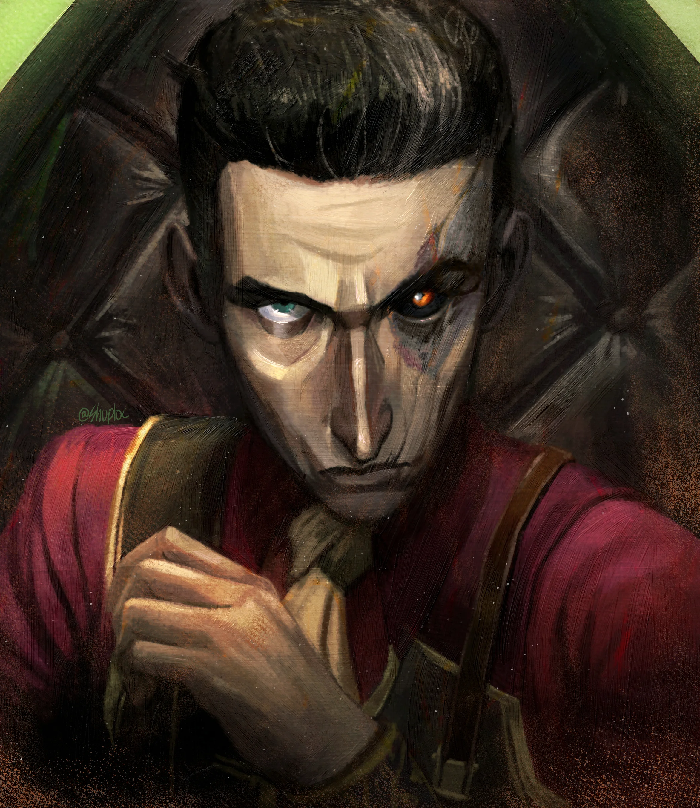
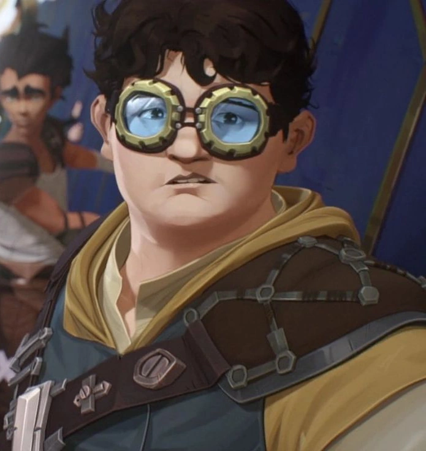
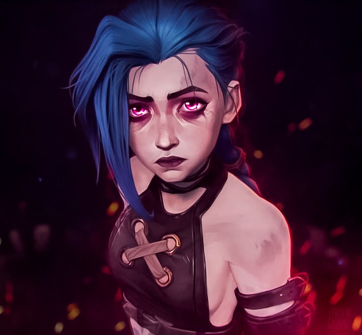

-
Heimerdinger

Este brilhante inventor yordle é a personificação da genialidade aliada à tradição científica. Com seu cérebro prodigioso e engenhocas brilhantes, Heimerdinger ergue torretas automatizadas e dispositivos estratégicos que dominam o campo de batalha. Seu conhecimento ultrapassa gerações, e suas criações brilham com energia hextec pura. Conhecido como o “Sábio de Piltover”, Heimerdinger transforma lógica em poder e ciência em defesa.
ATK/ 650 DEF/ 700 -
Gert

Uma força silenciosa envolta em lealdade e bravura, Gert é o escudo que protege sem hesitar. Nascida entre os becos de Zaun e moldada pelas batalhas da vida, ela carrega uma força bruta envolta em coração puro. Com músculos de aço e espírito inquebrável, ela enfrenta o perigo com olhar firme e passos decididos. Conhecida como a “Guardião Inabalável”, Gert surge nos momentos mais sombrios como símbolo de amizade, coragem e força verdadeira.
ATK/ 300 DEF/ 850 -
Caitlyn

Empunhando seu icônico rifle de precisão e olhos tão afiados quanto sua mira, Caitlyn é a sentinela de Piltover. Com mente estratégica e reflexos calculados, ela caça criminosos como peças em um tabuleiro, antecipando cada movimento. Sua arma é mais que um instrumento — é a extensão de sua justiça. Conhecida como a “Atiradora Implacável”, Caitlyn protege a ordem com frieza, precisão e um senso de dever inabalável.
ATK/ 800 DEF/ 500 -
Silco
Uma mente forjada nas sombras e movida por ambição implacável, Silco é a síntese letal entre idealismo e crueldade. Alimentado por sua visão de uma Zaun independente, ele manipula alianças e inimigos com palavras tão afiadas quanto punhais. Com o brilho tóxico do shimmer pulsando em suas veias, sua presença anuncia o colapso da ordem estabelecida. Conhecido como o “Arquiteto da Ruína”, Silco é o prenúncio silencioso de uma nova era.
ATK/ 700 DEF/ 650 -
Claggor
Um inventor destemido que transforma engenhocas em armas de precisão, Claggor é o cérebro por trás da força bruta. Com seus óculos sempre prontos e sua mente afiada, ele calcula cada movimento para garantir a vitória do time. Utilizando dispositivos táticos e explosivos engenhosos, protege seus aliados com estratégia e coragem. Sua presença é um sinal de preparação e confiança, sendo lembrado como o “Engenheiro do Impossível”.
ATK/ 400 DEF/ 600 -
Vi

Vestindo luvas forjadas para quebrar muralhas, Vi é a guardiã imbatível das ruas de Piltover. Com seus Punhos Hextec, ela desfaz o caos com golpes devastadores, protegendo os inocentes com determinação inabalável. Sua força não vem apenas das máquinas, mas de um passado marcado por escolhas difíceis. Conhecida como o “Punho da Justiça”, Vi é o escudo que separa a ordem da desordem.
ATK/ 750 DEF/ 750 -
Jinx
Esta imprevisível guerreira é o caos personificado, trazendo destruição com seu arsenal explosivo e risos insanos. Jinx é uma tempestade de pólvora e loucura, dançando entre os escombros enquanto suas bombas iluminam a noite. Dizem que onde ela passa, reina o desequilíbrio — não como um fim, mas como o nascimento de uma nova era de anarquia e liberdade selvagem.
ATK/ 950 DEF/ 400